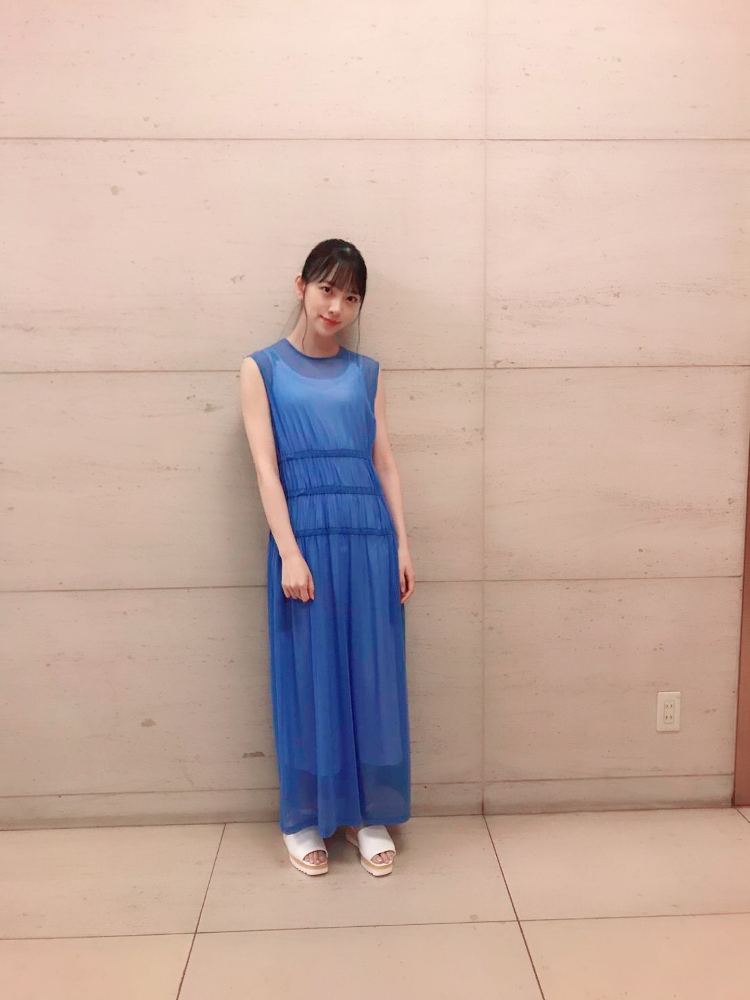

2019/0808Thu猫の日ということで
夜明けまで強がらなくてもいいの
MVが公開されました！
わたしは"泣き食い"してます
甘ったるいドーナツがわたしにとっての甘い光や憧れに例えられるとしたら、涙が出てきた原因が"ドーナツ"なわけで。悔しくて虚しくて、本当なら今すぐにでもドーナツを投げ捨てたいくらいの気持ちなのにやっぱり甘いドーナツを求めてしまう女の子の弱さ、愚かさを泣き食いシーンで表現してみました。
そしてきょうは猫の日です
MVで真っ白の猫ちゃんと共演したのですが、
わたし前々から猫アレルギーでして。
不安ながらも一緒に撮影したら全然大丈夫でした！！！
わーい^ ^
可愛かったなあ
フサフサだったなあ
顔埋めたらいい匂いがしました

ダンスシーンも見てね
ダンスの先生に褒めていただけてまた1つ自信につながりました。もっと頑張りたい！
大好きな水色の衣装☺︎
では
2019/08/08 12:36
コメント(292)
猫の日なんだー！
青い衣装似合ってる！
更新ありがとう！
青い衣装似合ってる！
更新ありがとう！
ねこ！
ニャンコ！
世界の皆様ご一緒に！！
ミュージックスターティン！！
ニャンコ♪ニャンコ♪花さかニャ…
歌いませんよ...今日は歌いませんよ...
MV観たよー
ドーナツを食べている堀ちゃんのシーンは
ドラマを観ているようで目を奪われた
堀ちゃんピンクも似合うよねっ
何度もダンスシーン観るねー
そのくらいの濃さの青もよく似合うよねー
逆に似合わない色ってあるのー？笑
ニャンコ！
世界の皆様ご一緒に！！
ミュージックスターティン！！
ニャンコ♪ニャンコ♪花さかニャ…
歌いませんよ...今日は歌いませんよ...
MV観たよー
ドーナツを食べている堀ちゃんのシーンは
ドラマを観ているようで目を奪われた
堀ちゃんピンクも似合うよねっ
何度もダンスシーン観るねー
そのくらいの濃さの青もよく似合うよねー
逆に似合わない色ってあるのー？笑
表情がいいですね。
食べる姿が可愛いだけじゃないってとこを見せていただきました。
食べる姿が可愛いだけじゃないってとこを見せていただきました。
ブログ更新ありがとう！！
MVみたよー！乃木坂はまだまだ急勾配だな！
猫アレルギーなんだ…自分は生き物が苦手だから近寄りたくても近寄らない気持ちが分かる気がする…！
またね
MVみたよー！乃木坂はまだまだ急勾配だな！
猫アレルギーなんだ…自分は生き物が苦手だから近寄りたくても近寄らない気持ちが分かる気がする…！
またね
今日は、猫の日だけど、
10月15日はきのこの日だよね。
僕の誕生日が、みおなちゃんと同じ誕生日っていうのが、めっちゃうれしいです。
10月15日はきのこの日だよね。
僕の誕生日が、みおなちゃんと同じ誕生日っていうのが、めっちゃうれしいです。
みーおーなー！
MV見た‼️
みおな可愛かった！
かっきー、あやめちゃん、さくちゃんも3人ともすごかった‼️
みおながドーナツもぐもぐしてて可愛かった
猫とみおなのコラボが可愛かった
にゃんにゃんって名前でコメしてるけど猫アレルギーかもしれんww
これからも頑張って‼️
健康に、病気に気をつけて‼️
応援しておるぞ！
MV見た‼️
みおな可愛かった！
かっきー、あやめちゃん、さくちゃんも3人ともすごかった‼️
みおながドーナツもぐもぐしてて可愛かった
猫とみおなのコラボが可愛かった
にゃんにゃんって名前でコメしてるけど猫アレルギーかもしれんww
これからも頑張って‼️
健康に、病気に気をつけて‼️
応援しておるぞ！
ホットギミック、凄く良かったです。
キラキラな世界と現実。騙されないでって思ったよ。
ドキドキでした。
ロケ地に住んでいるので本当にビックリしました‼️
FENDI良いですよね
キラキラな世界と現実。騙されないでって思ったよ。
ドキドキでした。
ロケ地に住んでいるので本当にビックリしました‼️
FENDI良いですよね
未央奈ちゃんブログ更新ありがとう☺未央奈大好き❤
1日2回更新はありがたい♡♡
MVのみおなも安定にかわいくてすっきー♡
握手行きたかった、、泣
MVのみおなも安定にかわいくてすっきー♡
握手行きたかった、、泣
更新有難う！
御疲れ様でした！
MVが良いと思います、
未央奈がとても可愛い。
何時も頑張って下さい、
どうか御身体に気を付けて下さい。
ずっと大好き！

御疲れ様でした！
MVが良いと思います、
未央奈がとても可愛い。
何時も頑張って下さい、
どうか御身体に気を付けて下さい。
ずっと大好き！
初めてミュージックビデオ見た時、未央奈は食べてばっかで驚きました笑。今まで色んな乃木坂のミュージックビデオを見ましたが、今回は今までの乃木坂に無かったミュージックビデオでしたね！沢山聴きますよ〜
ドーナツがめちゃおいしそうだったー
やっぱりカッコいい曲好きだな！
やっぱりカッコいい曲好きだな！
今日は二回投稿してくれたありがとう！
夜明けまで強がらなくてもいいのMV見ました！
短い動画がつながっているみたいになっていて不思議な動画でしたー。猫ひざに乗ってましたね、可愛かった。
スクランブル交差点みたいな感じが印象的だったなー。
ダンスも曲も歌もMVも全部好きです！
これからも応援します！体に気をつけて！
夜明けまで強がらなくてもいいのMV見ました！
短い動画がつながっているみたいになっていて不思議な動画でしたー。猫ひざに乗ってましたね、可愛かった。
スクランブル交差点みたいな感じが印象的だったなー。
ダンスも曲も歌もMVも全部好きです！
これからも応援します！体に気をつけて！
未央奈二度もブログ更新ありがとう！
未央奈のこといっぱい知りたいから、ブログとか755とかモバメとか、未央奈のこといっぱい伝えてくれるのすごく嬉しい。
MV見たよ。泣き食いにそんな深い思いが込められていたとは。未央奈はやっぱり女優さんだなあと感じたよ。こういうところでも評価されて未央奈にドラマや映画のお仕事が増えたらいいな。
猫アレルギー大丈夫だったんだね。
猫可愛いよね。僕は子供の頃から猫飼ってて猫大好きなんだ。
ダンスシーンも良かったよ！
ダンスの先生に褒めてもらえたんだね。自分の自信につながるような言葉ってありがたいよね。もっと頑張りたいって思える未央奈が素敵だな。
水色の衣装も似合ってて可愛い！
モバメもありがとう！生誕T楽しみにしてるよ！
では！
未央奈のこといっぱい知りたいから、ブログとか755とかモバメとか、未央奈のこといっぱい伝えてくれるのすごく嬉しい。
MV見たよ。泣き食いにそんな深い思いが込められていたとは。未央奈はやっぱり女優さんだなあと感じたよ。こういうところでも評価されて未央奈にドラマや映画のお仕事が増えたらいいな。
猫アレルギー大丈夫だったんだね。
猫可愛いよね。僕は子供の頃から猫飼ってて猫大好きなんだ。
ダンスシーンも良かったよ！
ダンスの先生に褒めてもらえたんだね。自分の自信につながるような言葉ってありがたいよね。もっと頑張りたいって思える未央奈が素敵だな。
水色の衣装も似合ってて可愛い！
モバメもありがとう！生誕T楽しみにしてるよ！
では！
堀ちゃん！更新ありがとう！
珍しく1日にブログ2つの更新、
とても嬉しいです！
自分は今、さっきまで
部活が合宿でレコメンも乃木中も
MVも…見てないんですよね～
夜、しっかり見ますよ～！！！
ダンスシーンですね！
絶対に目を凝らして見ますよ！
体調1番で頑張って！
いつでも応援してますよ！！
では！
次回の更新も楽しみにしてますよ！！
少し早いけど…
おやすみおな！！！
珍しく1日にブログ2つの更新、
とても嬉しいです！
自分は今、さっきまで
部活が合宿でレコメンも乃木中も
MVも…見てないんですよね～
夜、しっかり見ますよ～！！！
ダンスシーンですね！
絶対に目を凝らして見ますよ！
体調1番で頑張って！
いつでも応援してますよ！！
では！
次回の更新も楽しみにしてますよ！！
少し早いけど…
おやすみおな！！！
MVとても良かったです！夏らしく疾走感あって歌詞も心に響きますね！ドーナッツ頬張ってるシーンがたまらなく可愛いです
みおな
みおにゃー！MVじっくり見るよー！
猫の日？今日はフジテレビの日やで！
未央ちゃんブログ更新2回もありがとう^_^
夜明けまで強がらなくてもいいのMV見たよ^ ^
よかったよ(^ ^)
斉藤貴巳
夜明けまで強がらなくてもいいのMV見たよ^ ^
よかったよ(^ ^)
斉藤貴巳
私も猫アレルギー。あとハムスター。
妹が学校のハムスター持って帰ってきた時に目が腫れて大変でした。
週末の握手会楽しみです。
妹が学校のハムスター持って帰ってきた時に目が腫れて大変でした。
週末の握手会楽しみです。
更新ありがとぅー
猫可愛かったけど、堀ちゃんと一緒におったら堀ちゃんが可愛いから猫がかわいそう笑笑
体調気をつけて大阪頑張ってー
猫可愛かったけど、堀ちゃんと一緒におったら堀ちゃんが可愛いから猫がかわいそう笑笑
体調気をつけて大阪頑張ってー
ブログ更新ありがとう！
未央奈ちゃんの食べてる姿好き
mvもかっこいい感じでいいよね
これからも頑張ってね応援してます
未央奈ちゃんの食べてる姿好き
mvもかっこいい感じでいいよね
これからも頑張ってね応援してます
未央奈お疲れ様！
ブログ更新ありがとう！
新曲MVまだ見れてないから絶対みるね！
今日は猫の日なんだね！
水色の衣装めっちゃ可愛い！
未央奈のダンスめっちゃすき！
おれも踊り上手くなりたいな笑
これからも応援してる！
がんばれー！
ブログ更新ありがとう！
新曲MVまだ見れてないから絶対みるね！
今日は猫の日なんだね！
水色の衣装めっちゃ可愛い！
未央奈のダンスめっちゃすき！
おれも踊り上手くなりたいな笑
これからも応援してる！
がんばれー！
未央奈ブログ更新ありがとう！
やっと来たーって思った！
待ちに待ったMV今日だけで6回見たよ！
MV良かったよ！
またコメントします！
やっと来たーって思った！
待ちに待ったMV今日だけで6回見たよ！
MV良かったよ！
またコメントします！
好きだよー！
偶然だけど！ドーナツ食べながらMV見ました。(笑)
台風は怖いが14日は行きますよ。乃木坂46京セラドームライブにアリーナ席だし
ＭＶ見たよー！！
堀ちゃんの表情とか動きとか、自然に注目しちゃいます
映像も凄くキレイだし何回も見ます。。
堀ちゃんの表情とか動きとか、自然に注目しちゃいます
映像も凄くキレイだし何回も見ます。。
未央奈から元気もらった
猫の日は2月22日と思っていたら、本日も猫の日なのですね～。勉強になりました、ありがとうございます。猫ちゃんでアレルギー出なくて良かったですね。
新曲の発売楽しみです
新曲の発売楽しみです
みおにゃ♪ヽ(´▽｀)/みおにゃ♪ヽ(´▽｀)/みおにゃ♪ヽ(´▽｀)/
blog更新ありがとうございます
ますます暑くなりますが体調には気をつけてください
ますます暑くなりますが体調には気をつけてください
眠いのに2回も更新ありがとう。
水色の衣装似合う
かわいい
ますます好きになりました。
がんばれー
水色の衣装似合う
かわいい
ますます好きになりました。
がんばれー
こんばんはお疲れさま☺
新曲MV公開されたみたいやね✨
どんな感じか楽しみです。
少しレコチョクニュース見たら、なんか悲しげなイメージ？かな？
新しい制服、清楚な感じで、色も綺麗やね✨
暦の上では秋やもんね。立秋。
写真の水色の服も綺麗やね☺
似合ってますよ☺
ではではまたね☺
体調にはホンマに気をつけてくださいね。
ほなね、堀ちゃん☺
新曲MV公開されたみたいやね✨
どんな感じか楽しみです。
少しレコチョクニュース見たら、なんか悲しげなイメージ？かな？
新しい制服、清楚な感じで、色も綺麗やね✨
暦の上では秋やもんね。立秋。
写真の水色の服も綺麗やね☺
似合ってますよ☺
ではではまたね☺
体調にはホンマに気をつけてくださいね。
ほなね、堀ちゃん☺
堀未央奈❤こんばんは ドーナツ食べる所撮影したんだね でも美味しかった？未央奈水色の衣装似合ってるね 可愛い(*^_^*)今日なんでにゃんこの日なの？未央奈って猫アレルギーだったんだね。そんなに可愛いのにね これからも頑張ってね(#^.^#)
こんばんは。
更なる更新ありがとうございます！
堀さんを感じ取れる瞬間、幸せです。
新曲のMV、まだ観てませんが、期待ですね。
堀さんのチャレンジ、楽しみです。
猫アレルギーだったのですね。
アレルギーは徐々に治る事もあるようなので、良かったです。
でも、他の猫には発症するかもしれませんから、慎重にです。
気持ち的に言わない方が良かったですかね。。
青色系は、もはや代名詞ですね。
映えますね。
頑張って行きましょう！
更なる更新ありがとうございます！
堀さんを感じ取れる瞬間、幸せです。
新曲のMV、まだ観てませんが、期待ですね。
堀さんのチャレンジ、楽しみです。
猫アレルギーだったのですね。
アレルギーは徐々に治る事もあるようなので、良かったです。
でも、他の猫には発症するかもしれませんから、慎重にです。
気持ち的に言わない方が良かったですかね。。
青色系は、もはや代名詞ですね。
映えますね。
頑張って行きましょう！
未央奈ちゃん綺麗！！
こんにちは‼︎
ブログ更新、ありがとうございます♪
今日は猫の日なんですね‼︎
知らなかったです♪
あれ、猫の日って2月22日じゃなかったっけ、と思ったので、ちょっと調べてみました。
すると、2月22日を猫の日としているのは、日本だけとのこと。
まあ、語呂合わせなんだから、そりゃそうか(笑)。
8月8日はInternational Cat Dayとのことで、世界的な取組なんですね‼︎
では、せっかくなので、今日はいつもより鰹節を多めにあげることにします(笑)。
そうそう、『夜明けまで強がらなくてもいい』のMV、観ましたよ‼︎
ドーナツを頬張る姿も、白猫ちゃんとの共演も、ちゃんとこの目に収めました♪
猫ちゃんに顔を埋めてみたんですね♪
猫ちゃんって、なぜかとってもいい臭いがしますよね‼︎
自分はワンちゃんも猫ちゃんも好きなのですが、臭いだけなら断然猫ちゃんだなあ。
動物なのに、あまりけもの臭がしないのは、なぜなんですかね？
不思議です♪
それにしても、アレルギー症状が出なくて良かったですね‼︎
自分は未央奈も猫ちゃんも大好きなので、仲良くしてくれて嬉しいです(笑)。
ではでは、また。
明日も未央奈にとっていい1日になりますように♪
ブログ更新、ありがとうございます♪
今日は猫の日なんですね‼︎
知らなかったです♪
あれ、猫の日って2月22日じゃなかったっけ、と思ったので、ちょっと調べてみました。
すると、2月22日を猫の日としているのは、日本だけとのこと。
まあ、語呂合わせなんだから、そりゃそうか(笑)。
8月8日はInternational Cat Dayとのことで、世界的な取組なんですね‼︎
では、せっかくなので、今日はいつもより鰹節を多めにあげることにします(笑)。
そうそう、『夜明けまで強がらなくてもいい』のMV、観ましたよ‼︎
ドーナツを頬張る姿も、白猫ちゃんとの共演も、ちゃんとこの目に収めました♪
猫ちゃんに顔を埋めてみたんですね♪
猫ちゃんって、なぜかとってもいい臭いがしますよね‼︎
自分はワンちゃんも猫ちゃんも好きなのですが、臭いだけなら断然猫ちゃんだなあ。
動物なのに、あまりけもの臭がしないのは、なぜなんですかね？
不思議です♪
それにしても、アレルギー症状が出なくて良かったですね‼︎
自分は未央奈も猫ちゃんも大好きなので、仲良くしてくれて嬉しいです(笑)。
ではでは、また。
明日も未央奈にとっていい1日になりますように♪
MV見ました。
よかったです
猫を膝の上に乗せてるシーン不安だったんですね。
でも無事終わってよかったね
よかったです
猫を膝の上に乗せてるシーン不安だったんですね。
でも無事終わってよかったね
可愛い♡
更新続いてくれて嬉しい(*^^*)ホント何着ても似合う(*ゝω･*)マジで可愛いです☆これからも頑張って下さいp(^^)q
1日2回もブログ更新感動です。
堀ちゃん大好き。
24thシングルMV視たよ。
堀ちゃんドーナツ泣き食いしてたね。
いや、役者だね。
猫アレルギー大丈夫で良かったね。
犬のほうが好きだけどけどたまには猫もいいね。
レコメン毎回聴いてるよ、昨日も楽しかった。
明日もブログ更新あるのかな?期待しちゃいます。
じゃあね
バイバイキーン
堀ちゃん大好き。
24thシングルMV視たよ。
堀ちゃんドーナツ泣き食いしてたね。
いや、役者だね。
猫アレルギー大丈夫で良かったね。
犬のほうが好きだけどけどたまには猫もいいね。
レコメン毎回聴いてるよ、昨日も楽しかった。
明日もブログ更新あるのかな?期待しちゃいます。
じゃあね
バイバイキーン
MV見たよ～(*´艸`)
泣いてるの見たら、涙ぼろぼろ｡ﾟ(ﾟ´Д｀ﾟ)ﾟ｡
衣装の色が個々で違っているから、
わくわく((o(￣ー￣)o))したよ！
んじゃね～！(>_<)
泣いてるの見たら、涙ぼろぼろ｡ﾟ(ﾟ´Д｀ﾟ)ﾟ｡
衣装の色が個々で違っているから、
わくわく((o(￣ー￣)o))したよ！
んじゃね～！(>_<)
未央奈ちゃん、お疲れさまです。
未央奈ちゃんがドーナツ食べているシーン、
これがイメージなのかなぁ（笑）
でもキャラ的にはいいかもね！！！
これからも応援しています！！！
未央奈ちゃんがドーナツ食べているシーン、
これがイメージなのかなぁ（笑）
でもキャラ的にはいいかもね！！！
これからも応援しています！！！
ヌコ大丈夫だったんですね良かった〜
ドーナツくんというわかりやすいアイコンで……ん？わかりやすい？？
ドーナツくんというわかりやすいアイコンで……ん？わかりやすい？？
未央奈ぁぁ〜！
本日二度目のブログ更新ありがとう！
今日猫の日なんだ、知らなかった
MV観たよ！
ドーナツ頬張ってたね
今日猫の日なんだ、知らなかった
MV観たよ！
ドーナツ頬張ってたね
MV見ました！！すごい綺麗で、かっこよくて、感動しました！
私もネコアレルギー…でもかわいい！
ワンピース似とるの持っとるからめっちゃ嬉しい！
私もネコアレルギー…でもかわいい！
ワンピース似とるの持っとるからめっちゃ嬉しい！


水色衣装いいね。
泣き食いシーンめっちゃ良かったです。
猫ちゃん可愛いかったね！